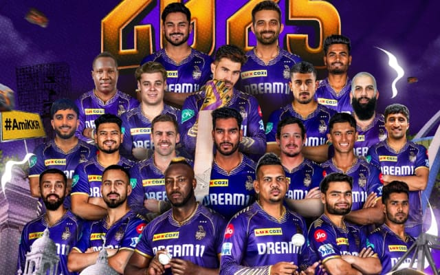

Kolkata Knight Riders (KKR)

The 2025 season is the 18th season for the Indian Premier League franchise
Kolkata Knight Riders. They are one of the ten teams competing in the 2025
Indian Premier League. They are the defending champions having won their
third title previous season.
Players:
- Ajinkya Rahane
- Chandrkant Pandit
- Rinku Singh
- Quinton de kock
- Rahmanullah Gurbaz
- Manish Pandey
- Luvnith Sisodia
- Rovman Powell
- Moeen Ali
- Ramandeep Singh
- Anukul Roy
Achievements:
Here's a more detailed look at their achievements:
- Three IPL titles: 2012, 2014, and 2024.
- Runner-up in 2021: Lost to Chennai Super Kings in the final.
- Consistent Playoff Appearances: KKR has consistently qualified.